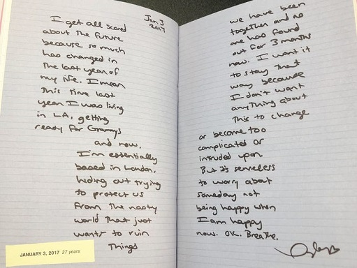

Our secret moments in your crowded room
They've got no idea about me and you
 There is an indentation in the shape of you
Made your mark on me, a golden tattoo

All of this silence and patience, pining in anticipation
My hands are shaking from holding back from you (ah, ah, ah)
All of this silence and patience, pining and desperately waiting
My hands are shaking from holding back from all this (ha, ha, ha, ha)
Say my name and everything just stops
I don't want you like a best friend
Only bought this dress so you could take it off
Take it off (ha, ha, ha)
Carve your name into my bedpost
'Cause I don't want you like a best friend
Only bought this dress so you could take it off
Take it off (ha, ha, ha, ha)
Inescapable, I'm not even gonna try
And if I get burned, at least we were electrified
I'm spilling wine in the bathtub, you kiss my face and we're both drunk
Everyone thinks that they know us, but they know nothing about
All of this silence and patience, pining in anticipation
My hands are shaking from holding back from you (ah, ah, ah)
All of this silence and patience, pining and desperately waiting
My hands are shaking from holding back from all this (ha, ha, ha, ha)
Say my name and everything just stops
I don't want you like a best friend
Only bought this dress so you could take it off
Take it off (ha, ha, ha)
Carve your name into my bedpost
'Cause I don't want you like a best friend
Only bought this dress so you could take it off, take it off (ha, ha, ha, ha)
Only bought this dress so you could take it off, take it off (ha, ha, ha, ha)
Only bought this dress so you could take it off
Your buzzcut and my hair bleached
 Even in my worst times, you could see the best of me
Even in my worst times, you could see the best of meFlashback to my mistakes
My rebounds, my earthquakes
Even in my worst lies, you saw the truth of me
And I woke up just in time
Now I wake up by your side
My one and only, my lifeline
I woke up just in time
Now I wake up by your side
My hands shake, I can't explain this (ha, ha, ha, ha)
Say my name and everything just stops
I don't want you like a best friend
Only bought this dress so you could take it off, take it off (ha, ha, ha, ha)
Carve your name into my bedpost
'Cause I don't want you like a best friend
Only bought this dress so you could take it off, take it off (ha, ha, ha, ha)
There is an indentation
In the shape of you
Only bought this dress so you could take it off
You made your mark on me, golden tattoo
Only bought this dress so you could take it off